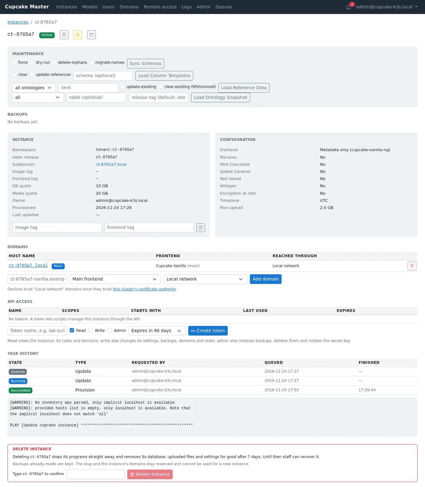
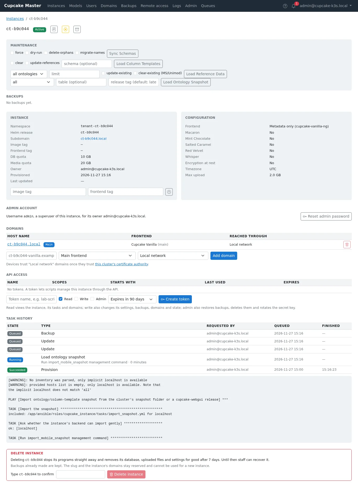
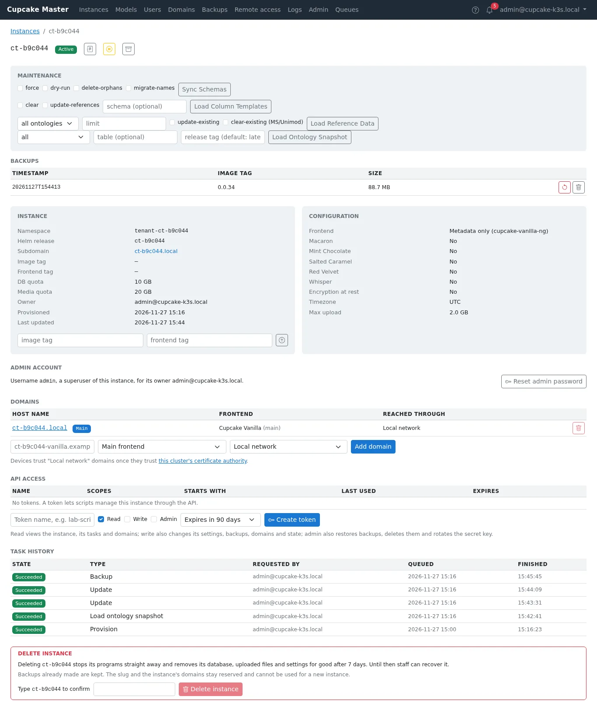

Every active instance is backed up each night at 02:00: its database and its uploaded files. cupcake-master backs up its own database at 04:30. A backup can also be made at any time with Back up now on an instance's page.


When it finishes, the backup is listed under Backups on the instance's page.

How long backups are kept
Everything from the last 24 hours is kept, so a backup made before an upgrade stays. Older ones are thinned to the newest backup of each of the 7 most recent days and of the 4 most recent weeks. The same applies to the copies on the backup target.
Copying backups off the node
Backups are first kept on the cluster's own disk. If that disk fails, they are lost with the data, so set up a backup target on the Backups page in the top menu (staff only). Every night, after cupcake-master's own backup, everything is copied there.
| Target | You need |
|---|---|
| S3-compatible storage | The endpoint, bucket, access key and secret key; works with institutional S3, MinIO, Backblaze B2 and Wasabi |
| NFS share | The server and export; the export must let the cluster write as root |
| SMB/Windows share | The server, share, user, password and domain |
Choose Test to check the target can be reached and written to, and Copy now to copy straight away. The result of the last copy or test is shown next to the settings. Staff are notified, also by email, when a nightly backup or copy fails.
Copies on the target are only removed once they are past the retention above, and never when the cluster has lost its own backups of an instance, so a replaced disk cannot empty the target.
Restoring an instance
On the instance's page, under Backups, choose Restore this backup next to the backup to go back to, and confirm. This overwrites the instance's database with the backup and puts back the uploaded files it holds; files uploaded since are kept. Delete this backup removes one for good.
Rebuilding after losing the cluster
With a backup target, everything needed to rebuild is off the node: cupcake-master's database in the
_cupcake-master folder and each instance's backups in a folder named after it. Set up a new cluster, restore
cupcake-master's database, then restore each instance from its newest backup.